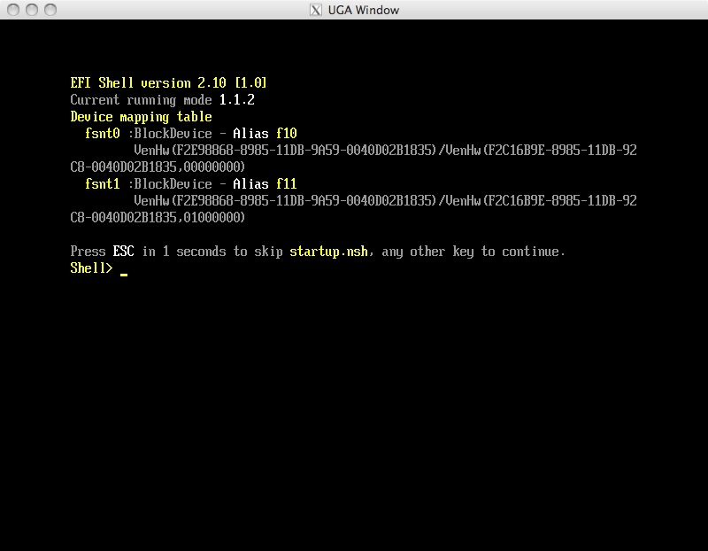

Welcome to the gcc-shell project
The purpose of this project is to provide the ability to build the
efi-shell project in the
EDK II for the ARM processor
type, and for all processor types with GCC. Currently you can
build the efi-shell in
the EDK II with the Edk Compatibility Package, but it does not support
ARM or GCC. Since adding ARM and GCC support required modifying
the efi-shell code in a way that is not compatible with the efi-shell
project this new project was added.
The current gcc-shell project is based on the efi-shell Subversion
revision 34.
Short Lived Project
It is intended that this project will have a short life. The long
term goal is to have a pure EDK II shell. When an EDK II shell is
available this project will be retired.
Getting Started
The following instructions assume you have the EDK II installed in
the edk2 directory.
Checkout the gcc-shell project from source control:
cd edk2
svn co
https://gcc-shell.tianocore.org/svn/gcc-shell/trunk/GccShellPkg
GccShellPkg --username username
Build GccShellPkg:
Follow the OS
specific
instructions to setup your build environment. For Windows
edksetup.bat, for Unix like systems you need to export EDK_TOOLS_PATH
and source edksetup.sh. Then you can build the shell:
Windows with RVCT:
build -p
GccShellPkg/GccShellPkg.dsc -a ARM -t RVCT31
Windows Cygwin Bash shell with RVCT:
build -p
GccShellPkg/GccShellPkg.dsc -a ARM -t RVCT31CYGWIN
OS X with Xcode tools example:
build -p
GccShellPkg/GccShellPkg.dsc -a IA32 -t XCODE32
Use gcc-shell in UnixPkg
cd edk2/UnixPkg
edit UnixPkg.fdf
Change:
SECTION PE32 =
EdkShellBinPkg/FullShell/Ia32/Shell_Full.efi
To:
SECTION PE32 =
Build/GccShellPkg/DEBUG_XCODE32/IA32/ShellFull.efi
Now build the shell:
./build.sh
Run the UnixPkg emulator:
./build.sh run
Let the UnixPkg emulator run until it boots the EFI Shell (gcc-shell)
and break into gdb with a ctrl-c. Your display might vary, but you
should see symbols for the EFI-Shell. The current UnixPkg uses an EFI
shell binary that was produced with Visual Studio so no symbols will be
shown.
^C
Program received signal SIGINT,
Interrupt.
0x92423806 in __semwait_signal ()
(gdb) bt
#0 0x92423806 in
__semwait_signal ()
#1 0x9244f441 in
nanosleep$UNIX2003 ()
#2 0x0000b989 in msSleep
(Milliseconds=0x14) at
/Users/fish/work/Migration/edk2/UnixPkg/Sec/UnixThunk.c:102
#3 0x0000acf5 in
UgaCheckKey (UgaIo=0x207880) at
/Users/fish/work/Migration/edk2/UnixPkg/Sec/UgaX11.c:380
#4 0x0000d8b7 in
_GasketUintn () at
/Users/fish/work/Migration/edk2/Build/Unix/DEBUG_XCODE32/IA32/UnixPkg/Sec/SecMain/OUTPUT/Ia32/Gasket.iii:63
#5 0x0000d801 in
GasketUgaCheckKey (UgaIo=0x207880) at
/Users/fish/work/Migration/edk2/UnixPkg/Sec/Gasket.c:406
#6 0x454a25fb in
UnixUgaSimpleTextInWaitForKey (Event=0x45603610, Context=0x45382110) at
/Users/fish/work/Migration/edk2/UnixPkg/UnixUgaDxe/UnixUgaInput.c:169
#7 0x45faad3a in
CoreDispatchEventNotifies (Priority=0x10) at
/Users/fish/work/Migration/edk2/MdeModulePkg/Core/Dxe/Event/Event.c:185
#8 0x45faa639 in
CoreRestoreTpl (NewTpl=0x4) at
/Users/fish/work/Migration/edk2/MdeModulePkg/Core/Dxe/Event/Tpl.c:114
#9 0x45f9f197 in
CoreReleaseLock (Lock=0x45fb1024) at
/Users/fish/work/Migration/edk2/MdeModulePkg/Core/Dxe/Library/Library.c:102
#10 0x45faabd6 in
CoreReleaseEventLock () at
/Users/fish/work/Migration/edk2/MdeModulePkg/Core/Dxe/Event/Event.c:113
#11 0x45fab26c in CoreCheckEvent
(UserEvent=0x45603210) at
/Users/fish/work/Migration/edk2/MdeModulePkg/Core/Dxe/Event/Event.c:562
#12 0x45fab2db in
CoreWaitForEvent (NumberOfEvents=0x1, UserEvents=0x45f94bc4,
UserIndex=0x45f94bac) at
/Users/fish/work/Migration/edk2/MdeModulePkg/Core/Dxe/Event/Event.c:621
#13 0x49bd2d45 in
WaitForSingleEvent (Event=0x45603210, Timeout=0x0) at
/Users/fish/work/Migration/edk2/GccShellPkg/Library/Event.c:212
#14 0x49be0442 in SEnvConIoRead
(File=0x49c52a60, BufferSize=0x45f94d04, Buffer=0x49fe3010) at
/Users/fish/work/Migration/edk2/GccShellPkg/shellenv/conio.c:553
#15 0x49bd490a in NShellPrompt
(ImageHandle=0x49d95e10) at
/Users/fish/work/Migration/edk2/GccShellPkg/newshell/init.c:949
#16 0x49bd4720 in InitializeShell
(ImageHandle=0x49d95e10, SystemTable=0x45f73f90) at
/Users/fish/work/Migration/edk2/GccShellPkg/newshell/init.c:715
#17 0x45f9e4e3 in CoreStartImage
(ImageHandle=0x49d95e10, ExitDataSize=0x45f94eec, ExitData=0x45f94ee8)
at
/Users/fish/work/Migration/edk2/MdeModulePkg/Core/Dxe/Image/Image.c:1260
#18 0x4550cccc in
BdsLibBootViaBootOption (Option=0x49ffa510, DevicePath=0x49ffa490,
ExitDataSize=0x45f94eec, ExitData=0x45f94ee8) at
/Users/fish/work/Migration/edk2/IntelFrameworkModulePkg/Library/GenericBdsLib/BdsBoot.c:382
#19 0x455252a9 in
BdsBootDeviceSelect () at
/Users/fish/work/Migration/edk2/IntelFrameworkModulePkg/Universal/BdsDxe/BdsEntry.c:214
#20 0x455255bc in BdsEntry
(This=0x4552d01c) at
/Users/fish/work/Migration/edk2/IntelFrameworkModulePkg/Universal/BdsDxe/BdsEntry.c:356
#21 0x45fad7e8 in DxeMain
(HobStart=0x45f70010) at
/Users/fish/work/Migration/edk2/MdeModulePkg/Core/Dxe/DxeMain/DxeMain.c:425
#22 0x45fadd1d in
ProcessModuleEntryPointList (HobStart=0x42020000) at
/Users/fish/work/Migration/edk2/Build/Unix/DEBUG_XCODE32/IA32/MdeModulePkg/Core/Dxe/DxeMain/DEBUG/AutoGen.c:287
#23 0x45f97773 in
_ModuleEntryPoint (HobStart=0x42020000) at
/Users/fish/work/Migration/edk2/MdePkg/Library/DxeCoreEntryPoint/DxeCoreEntryPoint.c:54
(gdb)
The UnixPkg should produce an X11 window that is the emulated EFI
graphics console.

Common Errors
build.py...
: error 1005: There are 2
INF files in
/Users/fish/work/edk2/GccShellPkg.
Please use '-m
<INF_FILE_PATH>' switch to
choose one.
If you build from the edk2/GccShellPkg directory you need to pick
either Shell.inf or ShellFull.inf. If you cd up to the edk2 directory
this build error will go away and both .inf files will be built.
'c:/Program' is not recognized as
an internal or external command,
operable program or batch file.
NMAKE : fatal error U1077:
'"c:/Program
Files/ARM/RVCT/Programs/3.1/761/win_32-pentium/armcc"' : return code
'0x1'
The default location of the RVCT compiler is not correct. Edit
edk2/Conf/tools_def.txt and update the line that starts with DEFINE
RVCT31_TOOLS_PATH to match the location of your RVCT install.
Building ...
/cygdrive/c/work/edk2/MdePkg/Library/BasePcdLibNull/BasePcdLibNull.inf
[ARM]
"/cygdrive/c/work/edk2/BaseTools/Bin/CYGWIN_NT-5.1-i686/armcc_wrapper.py"
"/cygdrive/c/Program
Files/ARM/RVCT/Programs/3.1/761/win_32-pentium/armcc"
--cpu
Cortex-A8 --c90 -c -g -O2 --no_autoinline --asm --gnu --apcs
/interwork --signed_chars --no_unaligned_access --split_sections
--preinclude AutoGen.h --diag_warning 167 -o
/cygdrive/c/work/edk2/Build/BeagleBoard/DEBUG_RVCT31CYGWIN/ARM/MdePkg/Library/BasePcdLibNull/BasePcdLibNull/OUTPUT/./PcdLib.obj
-I/cygdrive/c/work/edk2/MdePkg/Library/BasePcdLibNull
-I/cygdrive/c/work/edk2/Build/BeagleBoard/DEBUG_RVCT31CYGWIN/ARM/MdePkg/Library/BasePcdLibNull/BasePcdLibNull/DEBUG
-I/cygdrive/c/work/edk2/MdePkg
-I/cygdrive/c/work/edk2/MdePkg/Include
-I/cygdrive/c/work/edk2/MdePkg/Include/Arm
/cygdrive/c/work/edk2/MdePkg/Library/BasePcdLibNull/PcdLib.c
/bin/sh: /cygdrive/c/Program
Files/ARM/RVCT/Programs/3.1/761/win_32-pentium/armcc: No such file or
directory
The default location of the RVCT compiler is not correct. Edit
edk2/Conf/tools_def.txt and update the line that starts with DEFINE
RVCT31CYGWIN_TOOLS_PATH to match the location of your RVCT install.
edk2/Conf/tools_def.txt file does
not exist
This file is not checked into source control. When you setup your build
environment the first time edk2/BaseTools/Conf/tools_def.template gets
copied to edk2/Conf/tools_def.txt. This allows you to make local
modification to match the locations of the compilers installed on your
system without having to check that back into source control. If
edk/Conf/tools_def.txt exists it will not get overwritten. So you
should only have to change it one time.
GenFw --xip -e
UEFI_APPLICATION -o
/Users/fish/work/Migration/edk2/Build/GccShellPkg/DEBUG_XCODE32/IA32/GccShellPkg/Shell/DEBUG/Shell.efi
/Users/fish/work/Migration/edk2/Build/GccShellPkg/DEBUG_XCODE32/IA32/GccShellPkg/Shell/DEBUG/Shell.pecoff
GenFw: ERROR 1000: Unknown option
--xip
This is a bug in the edk2/BaseTools/Conf/build_rule.template. You
can update your local version in edk2/Conf/build_rule.txt:
Please remove --xip from the following line:
GenFw --xip -e $(MODULE_TYPE) -o ${dst}
$(DEBUG_DIR)(+)$(MODULE_NAME).pecoff